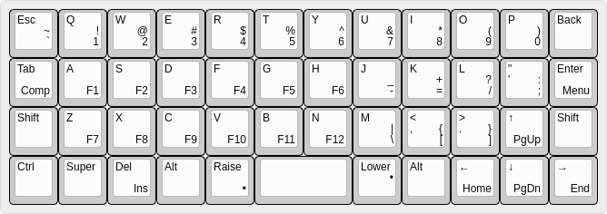

Where are All the Keys?¶
Published on 2020-09-29 in Dorsch 48k Keyboard.
With just 47 keys on this keyboard, there has to be some trick for getting all the missing keys somehow, so I’m going to try and explain how the 40% layouts usually work.
Of course the main trick is layers and layer switching keys. The mechanism should be familiar from laptops or on-screen keyboards: you have a special key, that, when pressed switches the keyboard into a mode in which the keys have different functions than normally. This is common for F1-F12 keys on laptops, or for media keys, but sometimes even for keys like Home, End, PgUp and PgDn. On the 40% keyboards you have to use this switching key pretty much for anything that us not a letter.
Let’s look at an example. Here’s the layout of Dorsch 48k:
The legends in the upper left corner of the keys are what you get if you just simply press that key. They are usually all placed as close to the original location of the given key on a “standard” keyboard.
Now, suppose you want to type “1”. You look for it, and you see it’s on the “Q” key, but in the lower right corner. That means you need to press a function key, labelled “Raise”, and then the “Q” key. They keyboard will act as if you pressed the “1” key.
But what if you wanted to press “!”? You could press and hold “Raise”, then press and hold “Shift” and then press “Q”, but that is a bit of gimnastics, so the Planck layout that this layout is loosely based on invented a shortcut: the “Lower” key, which is basically equivalent to “Raise”+”Shift”. So to type “!” you simply press and hold “Lower” and then press “Q”. This way you almost never have to press more than two keys at once. The “Raise” and “Lower” keys are pressed with your thumbs, so they don’t interfere with your regular typing movements.
The only problem is that you now how to learn where all the symbols are again. But if you look carefully, you will notice that they are pretty much in the same places as on a regular keyboard, only compressed a little bit. So the top row is numbers, like on QWERTY, with the minus and plus keys wrapped around. Quote and colon merged together, question mark moved up one row, and square brackets got pushed down a bit, but they now sit on the same keys as greater than and lower than, so that’s easy to remember. Backslash is always a problem, it landed in the only spot that was left.
All the cursor movement keys are in their logical places too. Page up and down are on up and down arrows, and Home and End are on the left and right ones. Del and Ins got moved away a bit in this particular layout, because I really need the right Alt key where it is, for typing Polish accented characters. Normally Del would go there, so it’s together with all the other cursor movement keys.
I still have some room for additional keys if I needed them. Backspace, for example, could have a “lock screen” as a second function. But I figured I will be adding those as I need them and get used to the rest.